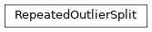

wildboar.model_selection.outlier¶
Functions¶
train_test_split(): Training and testing split from classification datasetthreshold_score(): Compute the performance of using the i:th score
-
wildboar.model_selection.outlier.train_test_split(x, y, normal_class, test_size=0.2, anomalies_train_size=0.05, random_state=None)¶ Training and testing split from classification dataset
- Parameters
x (array-like of shape (n_samples, n_timestep) or (n_samples, n_dim, n_timestep)) – Input data samples
y (array-like of shape (n_samples,)) – Input class label
normal_class (int) – Class label that should be considered as the normal class
test_size (float) – Size of the test set
anomalies_train_size (float) – Contamination of anomalies in the training dataset
random_state (int or RandomState) – Psudo random state used for stable results.
- Returns
x_train (array-like) – Training samples
x_test (array-like) – Test samples
y_train (array-like) – Training labels (either 1 or -1, where 1 denotes normal and -1 anomalous)
y_test (array-like) – Test labels (either 1 or -1, where 1 denotes normal and -1 anomalous)
Examples
>>> from wildboar.datasets import load_two_lead_ecg >>> x, y = load_two_lead_ecg() >>> x_train, x_test, y_train, y_test = train_test_split(x, y, 1, test_size=0.2, anomalies_train_size=0.05)
-
wildboar.model_selection.outlier.threshold_score(y_true, score, score_f)¶ Compute the performance of using the i:th score
The scores are typically computed using an outlier detection algorithm
- Parameters
y_true (array-like) – The true labels
score (array-like) – The scores
score_f (callable) – Function for estimating the performance of the i:th scoring
- Returns
score – performance for each score as threshold
- Return type
ndarray
See also
wildboar.ensemble.IsolationShapeletForestan isolation forest for time series
Examples
Setting the offset that maximizes balanced accuracy of a shapelet isolation forest
>>> from wildboar.ensemble import IsolationShapeletForest >>> from wildboar.datasets import load_two_lead_ecg >>> from sklearn.metrics import balanced_accuracy_score >>> x, y = load_two_lead_ecg() >>> x_train, x_test, y_train, y_test = train_test_split(x, y, 1, test_size=0.2, anomalies_train_size=0.05) >>> f = IsolationShapeletForest() >>> f.fit(x_train) >>> scores = f.score_samples(x_train) >>> perf = threshold_score(y_train, scores, balanced_accuracy_score) >>> f.offset_ = score[np.argmax(perf)]
Classes¶
RepeatedOutlierSplit: Repeated random outlier cross-validator
-
class
wildboar.model_selection.outlier.RepeatedOutlierSplit(n_splits=None, *, test_size=0.2, n_outlier=0.05, shuffle=True, random_state=None)¶ Repeated random outlier cross-validator
Yields indicies that split the dataset into training and test sets.
Note
Contrary to other cross-validation strategies, the random outlier cross-validator does not ensure that all folds will be different. Instead, the inlier samples are shuffled and new outlier samples are inserted in the training and test sets repeatedly.
Construct a new cross-validator
- Parameters
n_splits (int, optional) –
The maximum number of splits.
if None, the number of splits is determined by the number of outliers as, total_n_outliers/(n_inliers * n_outliers)
if int, the number of splits is an upper-bound
test_size (float, optional) – The size of the test set.
n_outlier (float, optional) – The fraction of outliers in the training and test sets.
shuffle (bool, optional) – Shuffle the training indicies in each iteration.
random_state (int or RandomState, optional) – The psudo-random number generator
Inheritance
-
get_n_splits(X, y, groups=None)¶ Returns the number of splitting iterations in the cross-validator :param X: The samples :type X: object :param y: The labels :type y: object :param groups: Always ignored, exists for compatibility. :type groups: object
- Returns
n_splits – Returns the number of splitting iterations in the cross-validator.
- Return type
int
-
split(x, y, groups=None)¶ Return training and test indicies
- Parameters
x (object) – Always ignored, exists for compatibility.
y (object) – The labels
groups (object, optional) – Always ignored, exists for compatibility.
- Yields
train_idx, test_idx (ndarray) – The training and test indicies